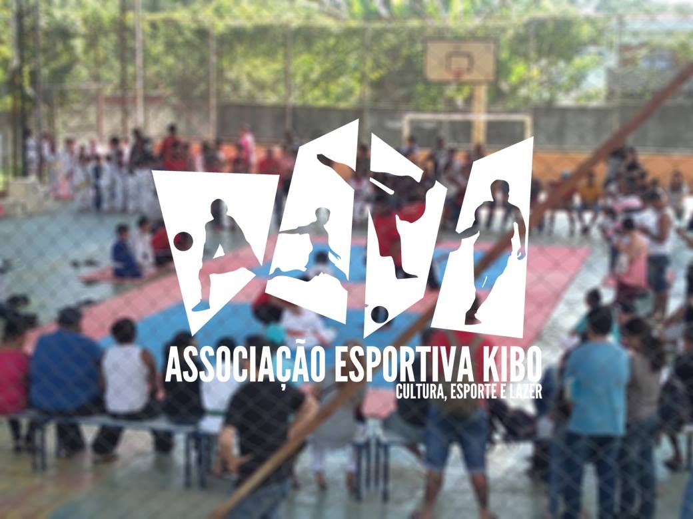

Apresentação
Nós, do Clã do Bem, somos uma organização independente e totalmente dedicada ao bem-estar de crianças e adolescentes em situação de vulnerabilidade. Nosso propósito é criar um ambiente acolhedor, onde todos se sintam respeitados e integrados, independentemente de cor, raça, religião ou qualquer outra diferença. Utilizamos o Ju-Jitsu como ferramenta para promover a saúde física, o desenvolvimento emocional e social, além de valores fundamentais como respeito e disciplina.
Política
É importante ressaltar que não contamos com apoio de partidos políticos ou governamentais. O projeto é mantido pelos próprios membros fundadores, pessoas que acreditam na transformação através do esporte. Embora a falta de apoio oficial torne nosso trabalho mais árduo, seguimos firmes no nosso sonho. Sabemos que o impacto positivo que geramos na vida dos nossos alunos e da comunidade é o que nos impulsiona a continuar.
Renda
Alguns empresários da região nos ajudam, mas é a comunidade, os amigos e alunos de Ju-Jitsu que fazem toda a diferença. Sem uma sede própria devido aos altos custos, seguimos trabalhando de forma colaborativa e voluntária. Nosso trabalho é feito de coração, com cada gesto de solidariedade, sempre facilitando o acesso de quem precisa, seja para doar ou para receber.
Ações sociais
Além das aulas de Ju-Jitsu, realizamos diversas ações sociais que reforçam o nosso compromisso com o desenvolvimento comunitário. Dentre elas, oferecemos aulas de Libras, promovendo a inclusão de pessoas com deficiência auditiva, e cursos profissionalizantes de elétrica, que preparam jovens para o mercado de trabalho. Também organizamos a Feijoada do Bem, evento que une a comunidade e nos ajuda a arrecadar fundos para manter o projeto, e a Troca de Livros, incentivando a leitura e o compartilhamento de conhecimento.
O Clã do Bem acredita que, juntos, podemos construir um futuro melhor para nossas crianças e adolescentes, sempre guiados pelos valores de respeito, disciplina e união.
